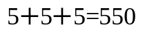

Rudolf är
(kanske lite oväntat)
något av ett mattesnille
Ha en bra söndag!
Rudolf är
(kanske lite oväntat)
något av ett mattesnille
När han var liten
kallades han
därför har han
knåpat ihop två
matteproblem...
Här är det första...
Om fem katter fångar tio
möss på tjugo minuter...
hur lång tid tar det
då en katt att fånga
tio möss?
Rudolf ogillar möss.
Han ogillar möss
väldigt mycket
sedan han orsakade
slädhaveriet -93
Pff, fnyser Rudolf.
Det var ju
fel
Nåja, här kommer ett mer
handgripligt problem
Addera ett rakt pennstreck
till följande uttryck
så att det blir
matematiskt korrekt
Rudolf har hittat
TRE olika ställen
att dra strecket på